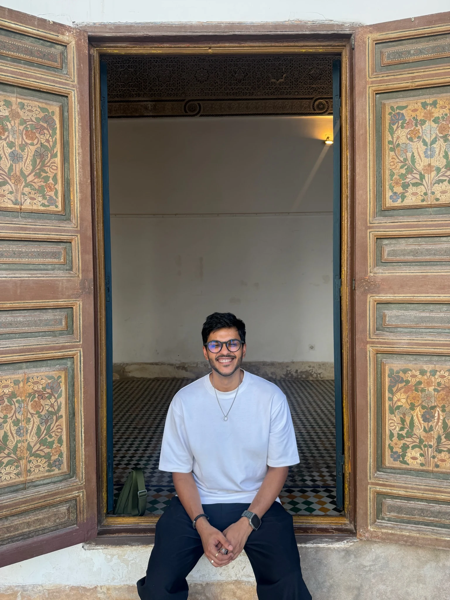
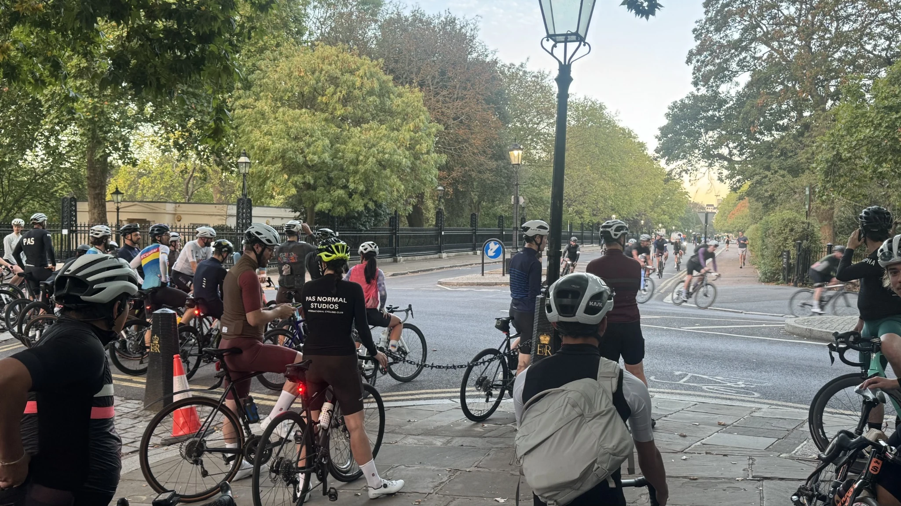
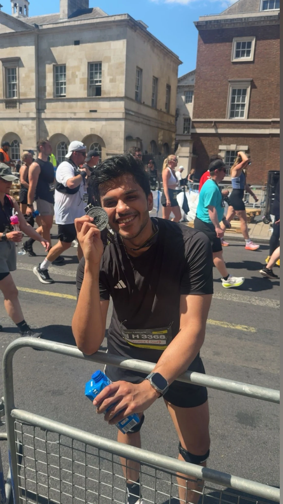
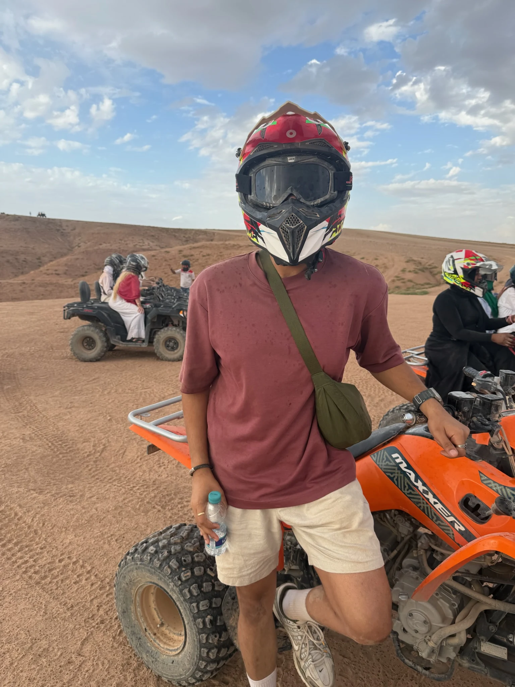

Enterprise portfolio
£7.5M
ARR portfolio managed in my enterprise Customer Success role.
I help enterprise customers get more from the technology they rely on. Sometimes that means finding room to grow. Other times, it means helping a team through a difficult moment. Either way, I start with understanding what matters to the people in front of me.
My roots are in sales and account management. Today I work in identity and security. Outside work, I’m usually on a bike, out for a run or listening to music.

I like thoughtful questions, a bit of humour and turning complicated challenges into practical next steps.
ARR portfolio managed in my enterprise Customer Success role.
Net revenue retention across the referenced portfolio.
Logo renewal rate across the referenced portfolio.
Qualified expansion opportunities I identified and developed alongside Sales.
Approximate qualified expansion pipeline sourced, not booked revenue.
Qualified pipeline is not closed revenue. All figures represent professional achievements rather than individual customer results.
Sales gave me commercial instincts. Account management taught me to look after relationships. Customer Success brought those two sides of the job together.
I enjoy the moment a difficult problem starts to make sense, especially when the customer can see a way forward.
Today I work in Enterprise Customer Success at Okta, helping organisations navigate identity and security. I enjoy getting into the technical details, but the most useful conversations usually start with people: what they need to achieve, what keeps them up at night and what would make their work easier.
Before Okta, I helped establish the Customer Success function at Onyx Capital. Earlier in my career, I worked in Enterprise Account Management at ClearTax, where I developed my commercial judgement and learnt how to earn trust in every customer conversation.
I moved into Customer Success because I wanted to be part of what happens after the sale. It is the part of the customer journey where promises become outcomes. I still enjoy the commercial challenge, but I believe growth works best when the customer genuinely has a reason to grow with you.
Because the best customer work isn’t reactive. It helps customers make sense of where they are, what’s in the way, and what they should tackle next.
To me, Customer Success is not simply about keeping customers happy. It is about understanding what they're trying to achieve, helping them work through the right challenges in the right order and creating value that lasts for both sides of the partnership.
Commercial growth matters. But I want the next investment to make sense for the customer, not just the forecast.
Dashboards tell part of the story. I pay just as much attention to the recurring questions, hesitations and changing priorities behind the numbers.
The best plan is the one a customer can actually follow. I like breaking big problems into useful, manageable next steps.
This is the rhythm behind most of my work, whether I’m helping an account grow, stabilising a difficult relationship, or guiding customers toward better value realisation.
Get to know why the customer bought, what has changed and who has to make the next decision.
Look at the data, then listen closely for what the data cannot tell you.
Prioritise a few actions the customer can realistically complete and measure.
Bring together the right people from Sales, Product, Support and the customer team.
Solve today’s issues while keeping future value and future goals in view.
I was selected through a committee process to join a network of 40 colleagues supporting Okta’s AI transformation. I enjoy experimenting with practical workflows, sharing what I learn and finding ways to give people more time for the work that actually needs their judgement.
For me, the exciting part of AI is what it can free people up to do.
Recognised at the EMEA Customer Success All Hands for helping customers find a faster path to measurable value. A team effort, and one I'm proud to have contributed to.
Each example focuses on my approach and contribution. The stories have been generalised to protect customer relationships, with commercial outcomes distinguished from opportunities still in progress.
Making room for growth in a customer relationship that was already doing well.
I took on an established enterprise account with strong adoption and a skilled technical team. Nothing was visibly broken. The opportunity was to understand what had changed in the customer’s business and whether we could help them do more.
I started with the relationship and the original buying decisions. Together with colleagues in Sales and technical teams, I explored existing capabilities, future requirements and relevant solutions, making room for the customer’s own expertise in those discussions.
Helping a customer rebuild confidence after a sudden loss of technical ownership.
When a customer lost an important internal technical owner, knowledge gaps and mounting support issues put strain on the relationship. The incoming stakeholders needed to learn a complex environment while keeping up with their existing responsibilities.
I listened to the new stakeholders, worked with technical specialists to prioritise the most disruptive workflows and created a short weekly learning plan. I also coordinated Customer Success, Sales and Renewals around a shared recovery approach.
Two ways I turn product conversations into conversations about business value.
One customer had excellent usage figures, but kept coming back to the question of return on investment. I facilitated a detailed feature review to explore which capabilities were relevant to their objectives and where their existing investment could work harder for them.
For another customer, the priority was understanding wider industry direction. I prepared a tailored strategic discussion around broad technology themes and future needs, helping senior stakeholders explore their choices beyond the usual adoption review.
What I value most about these recommendations is that they speak to how I work with others, share what I know and show up when things get complicated.
“When I joined Okta as a CSM a couple of years back, Souptik had already set the benchmark.”
“He was always willing to help and share his knowledge with others. Souptik inspires trust in everyone who had the privilege of working with him.”
“He is someone who takes responsibilities and drives things with ownership.”
The CV version of me is only one part of the story. There are long rides, finish lines, playlists and a few spontaneous adventures in the other part.

Give me an early start, a good group and a route I have never tried. The coffee stop is a bonus, not a requirement.

I enjoy the small wins that come from showing up consistently. A medal at the end does help.

I like saying yes to new experiences, even when the helmet is bigger than my head.
There is nearly always music playing somewhere in the background. I enjoy meeting people, learning from different perspectives and finding ways to give back to the communities around me.
LinkedIn has the professional stories. Strava has the evidence that I occasionally think a sunrise ride is a sensible idea.
If you are thinking about enterprise Customer Success, strategic account growth, identity and security, or even a new cycling route, I would be happy to connect.